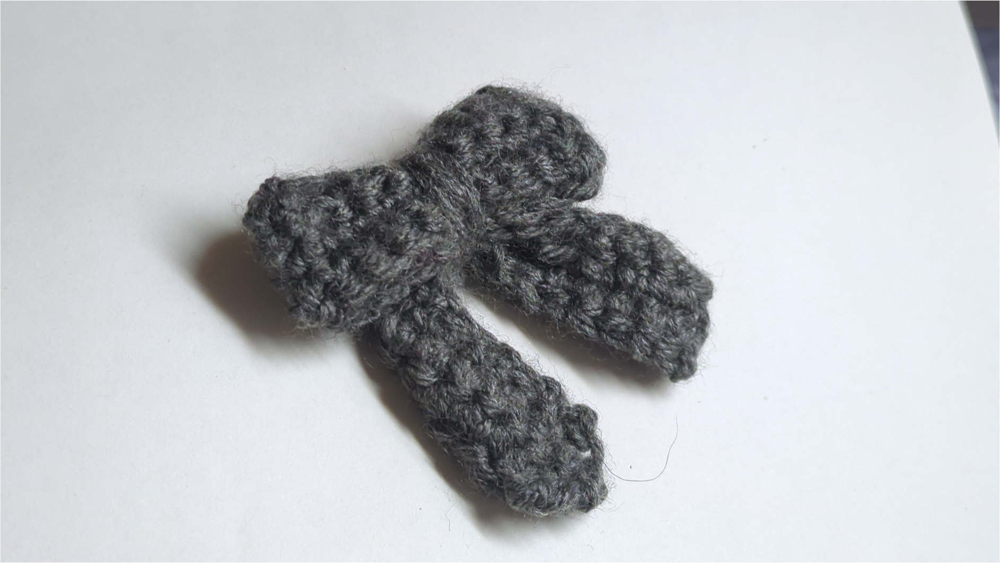
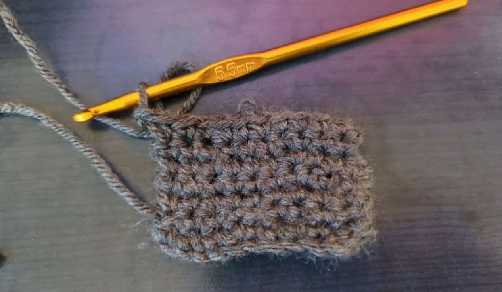
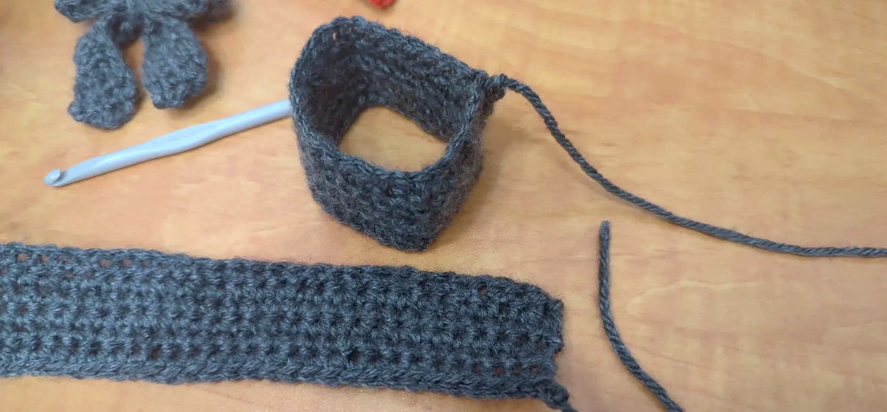
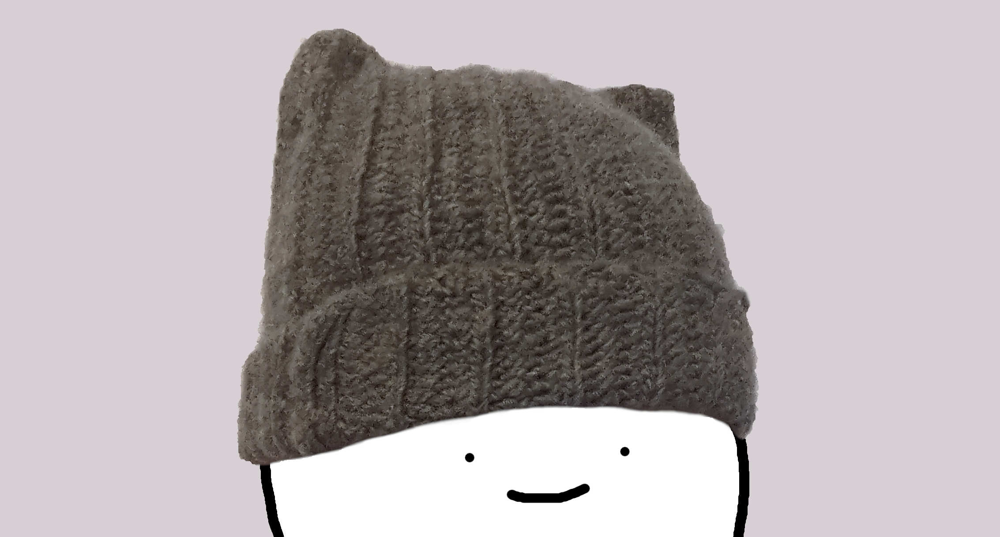

Getting into crochet

As of today, we’re completely rebranding dogeystamp.com as an arts and crafts website!
A few months ago, I remembered that joke about how senior software engineers invariably retire to tend to crops and a chicken farm, or to do woodworking. I wanted be ahead of the curve, so I too decided to get a hobby that involved tangible things: I learned crochet, which a way of making things (like that ribbon in the picture above) using yarn.
I’m not skilled or anything, so as the title suggests, this article mostly describes the beginner experience, and what I wish I’d known earlier. If you had to retain one thing from reading this, I would say that crochet is quite fun and accessible, as long as you have patience. Notably, I won’t actually explain how to crochet; many people have made much better online resources for that.
Materials
You only really need two things to crochet, the yarn and a crochet hook,1 and at the end you’ll need scissors to cut away the yarn you haven’t used. Usually, people have scissors already, so yarn and the hook are the only thing you need to get. Hooks and yarn both come in different sizes, and you do want the sizes to match. There is some margin of error on the sizes, though, so a small mismatch is fine.
I have actually never personally bought a hook or yarn as of writing, because some very generous people I know gifted me hooks and yarn.2 It’s probably not hard to buy yarn and a hook of matching sizes, but if you really want to be safe, they sell kits for beginners that should work fine out of the box.
Getting started
Crochet in particular is nice (compared to something like knitting) at the beginner stage, because every single stitch you make can be effortlessly undone by unravelling the yarn.
So to figure out how to crochet, I repeatedly made then unmade yarn squares, following tutorials online. (Pretty much any tutorial for complete beginners seems to be about making these swatches.) Here’s a work-in-progress picture of one of my first squares:

It turns out that the techniques for making squares are actually sufficient for creating many interesting items. In fact, all of the creations pictured in this article are entirely composed of rectangles stitched together in different ways.The process for making a square swatch starts with making a chain of yarn, then repeatedly building rows of single crochet stitches on top of that foundation, as if laying bricks to build a wall.3
Most of the difficulty in learning crochet comes from figuring out which hole to insert the hook into. On every row, there will be V-shapes, which you are supposed to pass the hook through to create stitches. I’d follow tutorials step by step, and end up confused because I couldn’t recognize the shapes from the tutorial when looking at the yarn in my hands. For me, it helped to fiddle and twist the row until the V-shapes were clearly visible, after which everything looked exactly like the tutorials.
Other than figuring out how to put the hook in the right hole, an important aspect of crochet is making your stitches nice and regular. There are two things that helped me with this. First, I learned that the thickest part of the hook is a measurement tool; by always wrapping your yarn around the thickest part when making stitches, your stitches will have a regular size. If you wrap yarn around a thinner part, the holes you make will be too tight to pass the hook through. Second, I watched this video about the “golden loop,” which contributed to making my stitches more consistent. The video itself is much better at explaining than I am, so please watch that for further information.
Making things
After becoming half-decent at making square swatches, I was able to make more interesting things.
Ribbons
I followed this tutorial for making a bow tie / ribbon just like the one pictured at the top of this page.
The ribbon is actually composed of two rectangles; one is for the main body part, and one for the two dangly bits below. The tutorial tells you the sizes (number of chains and number of rows) to make both rectangles, and once you make them, you attach them together by threading yarn through the stitches.

Ribbons were fun, since they don’t take a lot of time or material to make, are prettier than square swatches, and use the single crochet technique used for the beginner squares. The method I used for “sewing” together the rectangles was also pretty much just single crochet stitches,4 so once you figure out how to make a square, a ribbon isn’t much of a big step up.
Beanie
Once I made a few ribbons, I got bored and started looking for a new project. Taking some inspiration from the friend that helped me get into crochet, I made a beanie with cutesy ears,5 following this tutorial. Here’s me wearing the beanie:

(It’s hard to demonstrate a beanie without showing my face.) Despite the seemingly curved ears, the beanie is formed from a single rectangle; when worn, it naturally folds in a way that gives ears.6 Thus, making a beanie is really not that different from the square swatches I started off with. However, with this project, I did encounter some challenges.
First, the beanie does not just use single crochet stiches; it uses half-double crochet stitches, and slip stitches. This sounds quite daunting, but these stitches are actually quite similar to single crochet. For me, learning the new stitches took much less time than figuring out single crochet for the first time, because most of the muscle memory was the same.
Second, getting the dimensions of the beanie right was challenging. Making the beanie, I had to pick its width and length so that it could fit on my head. After two weeks of crocheting, I realized that I was running out of yarn, and, even worse than that, my beanie was comically tall. Unfortunately, I had picked completely incorrect dimensions, so I had to unravel everything and start over again. Thankfully, the second time crocheting the beanie, I was much faster because I got better at crochet.
Another thing to watch out for in terms of dimensions is that putting your crochet work in the washing machine might shrink it. Apparently blocking helps with shrinkage; I don’t know much about blocking though.
Conclusion
Learning crochet was fun; it’s easy to get into, and very forgiving of mistakes. Best of all, I get to keep the tangible fruits of my labor, and put cool photographs of them in this article.
There’s much much more to crochet than what I’ve outlined here; notably, amigurumi techniques let you make things that aren’t just rectangles. Hopefully though, this is enough to convey how getting into crochet is really accessible.
That concludes my thoughts on crochet. Happy April Fool’s Day!7
-
“Crochet hook” means “hook hook” but it is what it is. ↩
-
On the off-chance you are reading this, thanks a lot for the materials and your guidance :) ↩
-
For a niche 3D modeling metaphor for crochet, see this CodeParade video. ↩
-
Often, tutorials recommend that you use a proper sewing needle to sew together different pieces. So far, I have gotten away with just stitching pieces together. ↩
-
Everyone says these are cat ears, but I assure you these are shiba ears because I’m dogeystamp. ↩
-
The normal not-eared beanie is not a rectangle, and is arguably harder to make. ↩
-
To the astute readers who noticed that I posted this a few days late and backdated it to April 1st: shush you didn’t notice anything. ↩